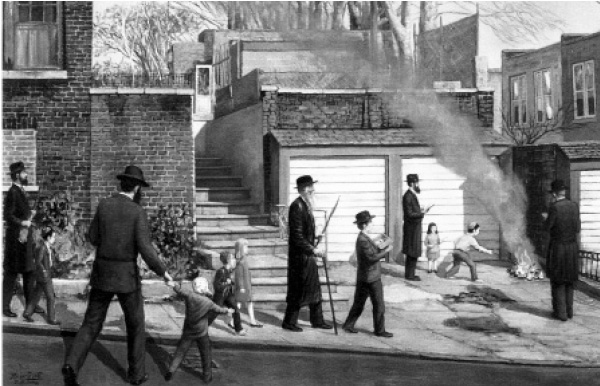

The B’dikas Chametz of Chassidim
A fascinating look at Pesach based on the Midrash, Kabbala, and Chassidus Chabad

WHAT DOES AND DOES NOT NEED TO BE CLEANED FOR PESACH?
There’s a line people say, “Dust isn’t chametz, children aren’t the Korban Pesach, and your husband isn’t the goat sent to Azazel!” The point here is that chametz needs to be gotten rid of, but spring cleaning and organizing have nothing to do with the mitzva of eradicating chametz. Anger at family members is always forbidden, even if it is for the sake of the mitzva of getting the house ready for Pesach.
There are places that must be cleaned of chametz before Pesach and places that don’t even have to be checked. It depends on the type of place it is. If it is a place where chametz is used, even infrequently, it needs to be cleaned. If it is never used for chametz, it does not need to be checked.
Destroying the chametz depends on the state of the chametz. If the chametz falls under our ownership it must be removed and destroyed. Chametz that is discarded and treated as something ownerless does not need to be checked for. In Shulchan Aruch HaRav, siman 434: 9 it says that tiny crumbs of chametz can be thrown on the floor “where it will be trampled, even inside the home,” because “it is destroyed by the trampling of feet.” In other words, the fact that it is walked on shows that it is worthless and does not remain in the person’s possession.
However, the Alter Rebbe in his responsa quotes the Arizal about being stringent on Pesach, about cleaning for chametz, as well as hiddurim regarding matza, “with all the stringencies.”
CLEANING THE HOUSE – REFINING THE SOUL
In Chassidus, it speaks a lot about eradicating the spiritual chametz, i.e. the bad character traits of the Evil Inclination and animal soul in one’s heart. The process of refinement and rectification of these traits is accomplished not only by learning Chassidus, but also by physically getting rid of actual chametz. The labor involved in getting rid of chametz affects a person on a soul level and refines his middos, revealing the emotions of love and fear of Hashem and the desire to serve Him with joy.
As surprising as it sounds, even though scouring pots and sinks all year round is not an inherently spiritual activity, the physical cleaning done for Pesach refines the soul and draws a Jew closer to the light of truth.
Based on this we can understand the practice of Chassidim to spend a long time on B’dikas Chametz (Igros Kodesh vol. 2, p. 344). The Rebbe tells about the Alter Rebbe who once spent the entire night on B’dikas Chametz even though he had one only room! (That was in 5525/1765 when he returned for the first time from the Maggid of Mezritch). This was not only because Chassidim are particular to fulfill mitzvos with great hiddur, but because of the great spiritual benefit that results in the act of checking for chametz.
Additionally, it’s not only the effort in checking for chametz, but also the effort put into baking matzos which erases the coarseness and the insensitivity to Torah and mitzvos, refines a Jew, and brings him close to the service of Hashem and His Torah.
THE ANGELS CREATED FROM THE EXERTION
The Rebbe Maharash once traveled from Marienbad to his home in Lubavitch. On the way, he stopped at the gravesite of the tzaddik, Rabbi Levi Yitzchok of Berditchev. On his way out, the saw a group of older Jews, Tolna Chassidim, who looked like men of stature and Torah scholars. These men were dragging a large barrel filled with water. Around them were younger men, but the older ones dragged the heavy barrel themselves and did not allow the younger men to help them. The barrel was brought to the beis midrash and they all worked to clean and polish it before their Rebbe came to visit the city.
The Rebbe said that he asked the older Chassidim, “Why are you doing the work yourselves and are not allowing the younger ones to help? This would train them in the ways of Chassidus! Why did you drag the water from a well so far away and not from a well closer to the beis midrash?”
The elders replied, “We want to put in the effort ourselves in honor of the Rebbe, because from the exertion in preparation for a mitzva, healthy angels are created who become advocates for us in heaven.”
They went on to say – one time, on Rosh HaShana, we heard R’ Levi Yitzchok address Hashem and say: Merciful Father, if the angels that emerge from the sounds of the shofar that I blew are weak (for my blowing was with a weak voice), may the healthy angels that were created from the great efforts that Jews put into preparing the house for Pesach be powerful advocates for us.
He added: That is the secret of what is said after the t’kias shofar, that the sounds that emerge from קשר״ק which stands for kratzen, shaben, raiben, kashern (scraping, polishing, rubbing, kashering), namely that the angels formed by the efforts put into Pesach ascend with the blowing of the shofar.
Astonishing words! Heavenly angels are created from the kashering and toil for Pesach that are even greater than those formed from the shofar blowing of the tzaddik, R’ Levi Yitzchok!
WORK WITH THE BODY, DON’T BREAK IT
It should be pointed out that the cleaning efforts should be done carefully, without endangering one’s health (from the fumes and other hazards associated with chemical cleansers). The following is a story that was told by the Rebbe Rayatz about the importance of a Jew’s health:
The Chassid Shaul Sholom of Horodok was an oved Hashem and greatly learned in Nigleh and Chassidus. He was well to do, supporting himself through farm work. He was a baal tz’daka and chesed and his hospitality was outstanding. He was one of the first Chassidim of the Alter Rebbe and then of the Mitteler Rebbe and the Tzemach Tzedek. He would go to the Rebbe once a year, on Shavuos. He would walk, despite the vast distance of hundreds of kilometers.
In 5608/1848 he was ninety years old and he still walked to the Rebbe! He even joined the dancing of the Chassidim and did the kazatzke, which is difficult even for youngsters.
When he had yechidus with the Tzemach Tzedek, the Rebbe said to him: You need to take care of the body of a Jew. The older the body gets, the more one needs to treat it with respect for the mitzvos of tzitzis and t’fillin that are done by it.
When he left the yechidus, he said to his fellow Chassidim: My brothers, I have the strength to dance just as I did when I was younger, but the Rebbe told me to be careful of my health and so I cannot dance the special dance after yechidus (known as Rikud Kodesh HaKadoshim), but please make me a chair with your hands and I will sit on them and we will do the dance.
Two strong men put their hands together and he sat on their hands and they danced together in an outpouring of their hearts. Suddenly, he slipped off his perch, jumped, and stood on the hands of the two Chassidim and began clapping and singing in wondrous d’veikus.
***
The highest moment in the life of a Chassid is when he has yechidus with the Rebbe. It is the moment when he rises up in the service of Hashem and he becomes a new entity. And it was at this lofty moment when the Tzemach Tzedek spoke about taking care of the health of a Chassid.
May it be Hashem’s will that by doing the mitzva of B’dikas Chametz on the eve of Pesach that we eradicate the Evil Inclination from all the nooks and crannies of this bitter galus. May we speedily merit the true and complete Geula, “as in the days of your going out of Egypt, I will show you wonders.”
Ykarasik. "The B’dikas Chametz of Chassidim." Beis Moshiach, no. 874 (March 21, 2013).